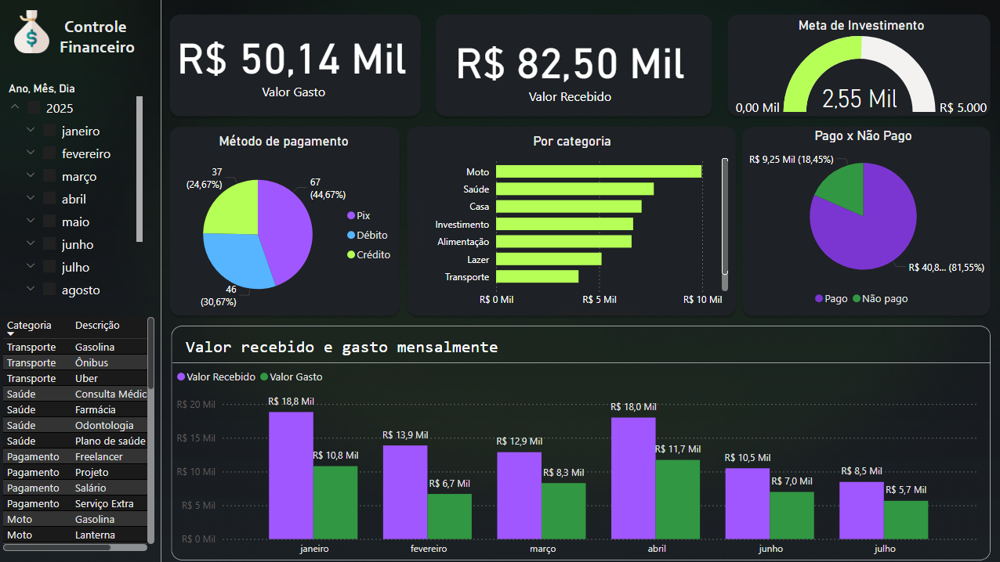

Bem-vindo ao meu Portfólio Power BI
Aqui você encontrará dashboards que criei ao longo da minha carreira e projetos pessoais, mostrando minhas habilidades em análise de dados e visualização.
Entre em ContatoProjetos da Carreira
Dashboard - Indicadores de Inventário
Dashboard que reúne quantas quebras de estoque ocorreram no mês e demonstra quanto de custo isso gerou para empresa.
Dashboard - Faturamento Comercial SJC
Visualização de metas de faturamento, por mês, trimestre e ano, com porcentuais e somatória de prospecção de leads por período.

Dashboard - Gerenciamento de Garantias
Dashboard para análise de custo de Garantias, tipos de defeitos nos produtos, demora para resolução, entre outros.

Dashboard - Chamados Hospitalares
Dashboard que conta com dados de atendimento de chamados de Suporte de T.I em um Hospital.
Dashboard - Atendimentos por I.A
Análise detalhada de atendimentos realizados por Inteligência Artificial, mostrando sua produtividade.

Em breve
Visualização para controle de estoque, movimentação e logística de produtos.
Projetos Pessoais
Dashboard - Fábrica de Tecidos
Projeto universitário junto de uma Fábrica de Tecido, conta com dados a repeito de produção de rolos de tecidos.
Dashboard Finanças Pessoais
Visualização para controle de gastos, receitas e orçamento mensal pessoal.
Em breve
Ainda está sendo desenvolvido, em breve será exibido aqui.
Quem Sou Eu
Olá! Sou Pedro Bittencourt, analista de dados Jr se especializando em Power BI. Tenho paixão por transformar dados complexos em insights claros e visuais impactantes.
Nesse começo de carreira, pude desenvolver dashboards para empresas de diferentes setores, além de projetos pessoais que me ajudaram a aprimorar minhas habilidades e explorar novas ideias.
Graduações & Experiências
Conheça um pouco da minha jornada.